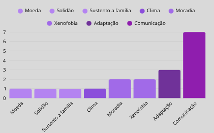
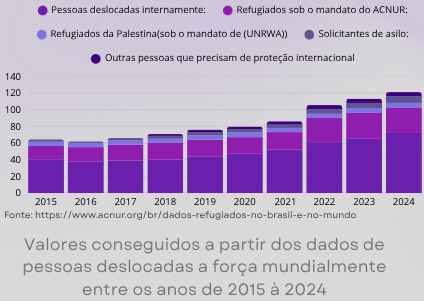
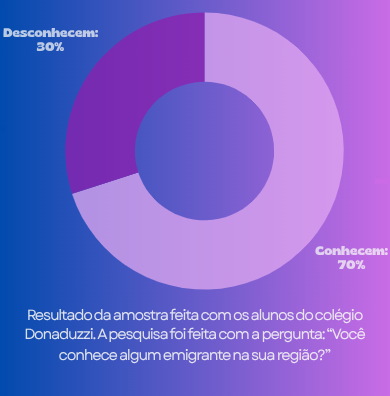

Perguntas Frequentes:
O que posso doar?
Por que doar?
Como doar?
O que farão com os itens doados?
Quais as datas e locais?
Para quem estou doando?
Sobre a campanha:
Essa é uma campanha feita por alunos do colégio donaduzzi com o objetivo de arecadar doações em conjunto com e Embaixada Solidária e com o Biopark. Os itens que podem ser doados são: roupas, brinquedos e alimentos não perecíveis.
Colaboradores:
Biopark

Embaixada Solidária
Mais informações:
-
Até o fim de 2024, 123,2 milhões de pessoashaviam sido forçadas
a se deslocar
-
Isso equivale a mais de 1 em cada 67 pessoas em todo o mundo são
emigrantes.
- O deslocamento forçado quase dobrou na última década.
Dúvidas:
Dados:
Dificuldades dos emigrantes ao chegarem no Brasil, de acordo com alunos do colégio donaduzzi:
Resultados obtidos através da pergunta feita em amostra para estudantes do colégio Donaduzzi . A pergunta direcionada aos alunos foi: “Qual é a maior dificuldade que um emigrante pode enfrentar ao chegar em um país com a cultura completamente diferente?
Valores adicionais sobre os emigrantes:
Porcentagem estimada de alunos do colégio donaduzzi que conheceram emigrantes:
Sobre nosso trabalho:
Nós ajudamos os refugiados emigrantes que vem para o Brasil com campanhas de destribuição de recursos anualmente, ajudando milhoes que não tiveram uma chance, mas que agora poderam começar uma vida nova no Brasil.